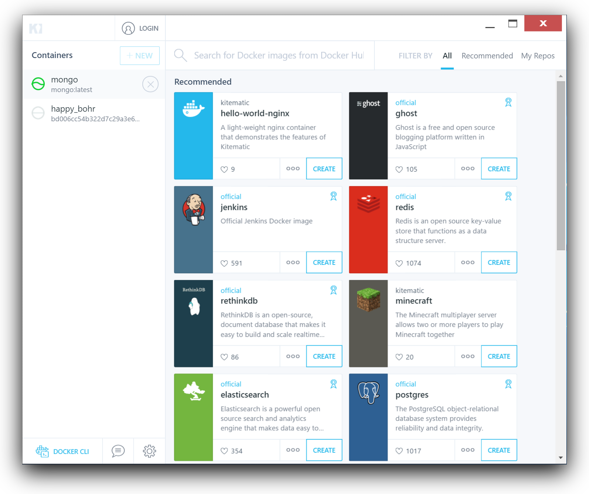

I just want to share some screenshots with you. Today I have played with Kitematic on a Windows Server 2016 TP3 and made it talk to the Windows Docker Engine. Yes, no VirtualBox in between.
A closer look at the left column shows a running mongo container. Yes, I know, you cannot pull docker images with the Windows Docker Engine at the moment. But if you have created some local Docker images with the official names it looks pretty impressive right now.

And to show that this is no fake you can see some windows pathes in the container logs view:

That's all for now.